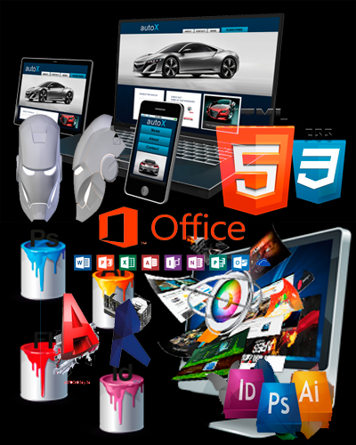

Mis Pasatiempos
Practicar Deporte
Una rutuna es la repetición costante de una actividad, y para mi una rutina es salir a correr todos los días, participar en las carreras que se hacen en la capital los fines de semana y algunas carreras nocturnas. El correr para mi es una de las actividades que más me gusta hacer, ya que no solo es bueno para mi salud y además me mantiene en forma.
Estudiar Computación
Desde que inice a estudiar computación en el año 2013, no he parado de capacitarme en el área, he estudiado desde windows y office hasta programación con php y js, pasando por toda el área del diseño tanto gráfico, web y arquitectonico, llegando a estudiar animación 3d.
Ver Futbol
Desde que era niño mi deporte favorito siempre ha sido el futbol, siempre veo y escucho de futbol es un deporte que nunca me cansare de seguir, y es algo de que más conocimeitos tengo tanto en historia de futbol como en la realidad presente de este deporte, tambien me agrada mucho el beisbol.
Ver Televisón
No me gusta leer, asi que una forma de tener más conocimientos es ver television especialmete programas que se traten de historia que en lo personal es el tema que más me gusta, siempre veo en la television programas que enriquezcan mis conocimientos y me haga aprender algo nuevo.
Peliculas y Anime
Como pasatiempo o perdida de tiempo para algunas personas, como lo es el tema con las caricaturas y el anime, no veo mucho pero siempre me dedico a ver un par de episodios al día, es algo muy entretenido y hay series que no puedo dejar de ver por su creatividad, escenas, sus dibujos su animación y su trama.